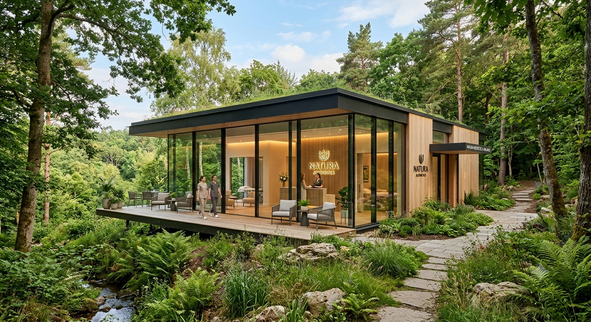

Zobna ambulanta
| Prvi pregled | 79 dni |
|---|---|
| Protetika | 148 dni |
Odgovorna oseba za čakalne dobe: Lucija Klančič dr. dent. med.

Delovni časi in čakalne dobe
Urniki po ambulantah in trenutne čakalne dobe.
Delovni časi
| Dan | Urnik naročanja | Zobna ambulanta | Gastroenterološka ambulanta |
|---|---|---|---|
| Ponedeljek | 12:00–20:00 | 12:30–19:30 | 12:00–19:30 |
| Torek | 8:00–15:00 | 7:30–14:30 | 7:00–14:00 |
| Sreda | 12:00–20:00 | 7:30–14:30 | 13:00–20:00 |
| Četrtek | 8:00–15:00 | 7:30–14:30 | 7:00–14:00 |
| Petek | 8:00–15:00 | 7:30–14:30 | 7:00–14:00 |
Zobna in gastroenterološka ambulanta: samoplačniki po dogovoru.
Čakalne dobe
| Prvi pregled | 79 dni |
|---|---|
| Protetika | 148 dni |
Odgovorna oseba za čakalne dobe: Lucija Klančič dr. dent. med.
| Postopek | Zelo hitro | Hitro | Redno |
|---|---|---|---|
| Gastroenterološki prvi pregled | Junij 2026 | December 2026 | Februar 2027 |
| Gastroskopija (ezofagodastroduodenskopija — EGDSK) | Januar 2027 | Marec 2027 | Julij 2027 |
| Kolonoskopija (razen v okviru SVIT) | Julij 2026 | Marec 2027 | Julij 2027 |
| UZ trebuha (abdomna) | Januar 2027 | Marec 2027 | Julij 2027 |
Odgovorna oseba za čakalne dobe: Marko Klančič, spec. inter., gastroenterolog.
Naročite se prek kontakta vaše ambulante — kontakti so na strani Naročanje.